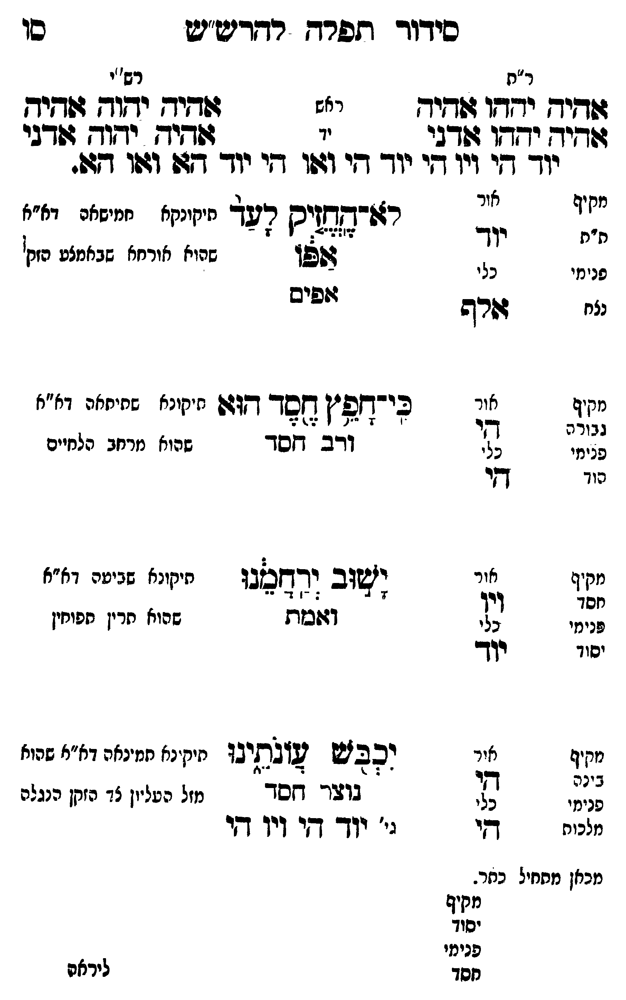

Neue Klartextfassung
=== טבלה === [ר"ת — ראש] אהיה יהוה אהיה [ר"ת — יד] אהיה יהוה אדני [רש"י — ראש] אהיה יהוה אהיה [רש"י — יד] אהיה יהוה אדני יוד הי ויו הי, יוד הי ואו הי, יוד הא ואו הא. === סוף טבלה === === טבלה === [לא החזיק לעד — תיקונא חמישאה דא"א שהוא אורח שבאמצע שפה התחתונה] לא החזיק לעד אפו אפים [מקיף — ת"ת; אור — יוד; כלי — יוד; פנימי — נצח] [כי חפץ חסד הוא — תיקונא שתיתאה דא"א שהוא מרחב הלחיים] כי חפץ חסד הוא ורב חסד [מקיף — גבורה; אור — הי; כלי — הי; פנימי — הוד] [ישוב ירחמנו — תיקונא שביעאה דא"א שהוא תרין תפוחין] ישוב ירחמנו ואמת [מקיף — חסד; אור — ויו; כלי — יוד; פנימי — יסוד] [יכבש עונתינו — תיקונא תמינאה דא"א מזל העליון עד חזה הלב [?]] יכבש עונתינו נוצר חסד ג' יוד הי ויו הי [מקיף — בינה; אור — הי; כלי — הי; פנימי — מלכות] [מכאן מתחיל כתר.] [מקיף — יסוד; פנימי — חסד] === סוף טבלה ===
Original gegen neue OCR · Niqqud für Vergleich ausgeblendet
Original
=== טבלה === [ר"ת — ראש] אהיה יהוה אהיה [ר"ת — יד] אהיה יהוה אדני [רש"י — ראש] אהיה יהוה אהיה [רש"י — יד] אהיה יהוה אדני יוד היK136-001 ויו הי, יוד הי ואו הי, יוד הא ואו הא. === סוף טבלה === === טבלה === [לא החזיק לעד — תיקונאK136-002 חמישאה דא"א ∅K136-003 שהוא אורח שבאמצע שפה התחתונה] לא החזיק לעד אפו אפים [מקיף — ת"ת; אור — יוד;K136-004 כלי — יוד; פנימי — נצח] [כי חפץ חסד הוא — תיקונא שתיתאהK136-005 דא"א שהוא מרחב הלחיים] כי חפץK136-006 חסד הוא ורב חסד [מקיף — גבורה; אור — הי; כלי — הי; פנימי — הוד] [ישוב ירחמנו — תיקונא שביעאה דא"א שהוא תרין תפוחין] ישוב ירחמנו ואמת [מקיף — חסד; אור — ויו; כלי — יוד; פנימי — יסוד] [יכבש עונתינו — תיקונא תמינאה דא"א מזל העליון עד חזה הלב ] יכבש עונתינו נוצר חסד ג' יוד הי ויו הי [מקיף — בינה; אור — הי; כלי — הי; פנימי — מלכות] [מכאן מתחיל כתר.] [מקיף — יסוד; פנימי — חסד] === סוף טבלה ===K136-007
OCR · fehlbar
כידוד תפרד רדדיע"ש כו ר"ח רש'י דזד[יח ידדו דוד(יח ראש דפ[דיח יחודך ושדיא דודיך יחשדו 4(דבי יד ושיח יחוש זפדבי יוך קיK136-001 ויו די יודך די וגפו די יוך זן וז9ו דגט. לל (ג רצו"קגליס קעך חיקונקאK136-002 חמישאה דא"א (נג. נ צזאן שחיא אורחא שבאמצע זק: נצח דזרש זופיש מקיף אור כי"חפ"ן ד[סך- דדש תיקונא שתיחאה דא"א גבזרה י ר' 1 "צד ן צ. 4 פנימי נל. ודב חסדK136-003 שהוא מרחב הלחיים הוך [י מזקי א ו ו ל י יטה דא"א ל (ו ג' ושוב ודחכגו תיקונא שביטה ד פנימיK136-004 כלי ודושבות שהוא תרין תפוחין סיו יוך נקיף צ. יכבז2 גזלקיבו תיק נא חמינאהK136-005 דא"א שהוא לג ללל בו- דזסך מזל העל"נן צד הזקן הנגלה מלכוח [י גי' יודך קקי (יו שי מכאן מתחיל כחר. 312 יסוד פנימיK136-006 חסד ליראהK136-007